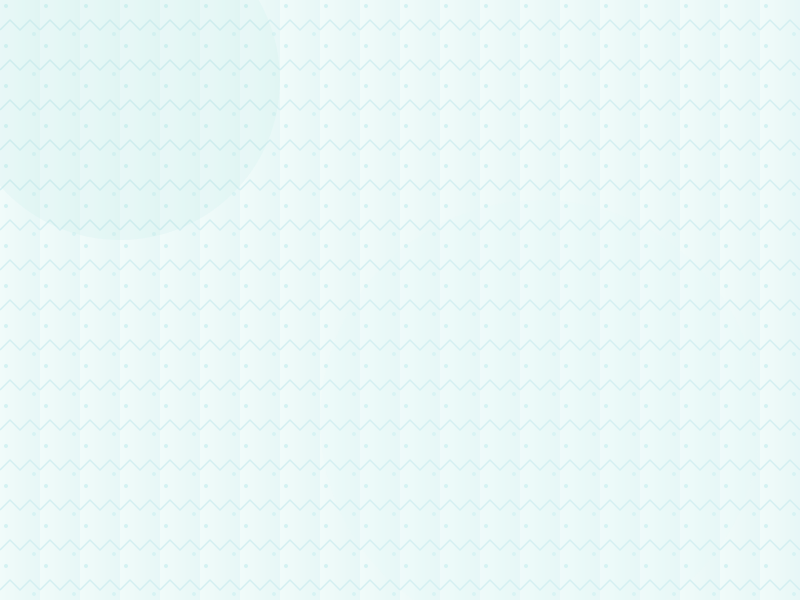

Curated sound sessions for clearer calm
Practical sound sessions that sharpen rest, designed for busy minds. Small groups, private days, and guided audio landscapes to help you return to work, care, and life with steadier attention.
- Small group gatherings — 10–20 seats
- Focused single-day VIP Studio
- Private sessions for individuals and teams

Atmosphere
A small selection of ambient visuals — the experience centers on listening, so instrumentation and light are soft and intentional.
What to expect
- Arrival & grounding: brief check-in and setup (5–10 minutes).
- Guided sound segments: composed layers of bowls, frame drum, and breath direction (40–60 minutes).
- Integration: quiet closing and optional journaling time (10–15 minutes).
Health note: If you have epilepsy, unstable cardiovascular conditions, are pregnant and have concerns, or rely on medical hearing devices, consult your provider before attending. If you are currently taking medication that causes light-headedness or you have implanted medical devices, check with a clinician.
Common questions
Do I need prior experience?
Is this meditation?
What should I bring?
Session Planner
Build a tailored session for yourself or a small group and copy the plan as a plain-text summary.
Want a focused studio day?
Schedule a dedicated VIP studio session for deeper work — we design the flow and provide bespoke material for teams or deep personal resets.
Book a VIP Studio Day